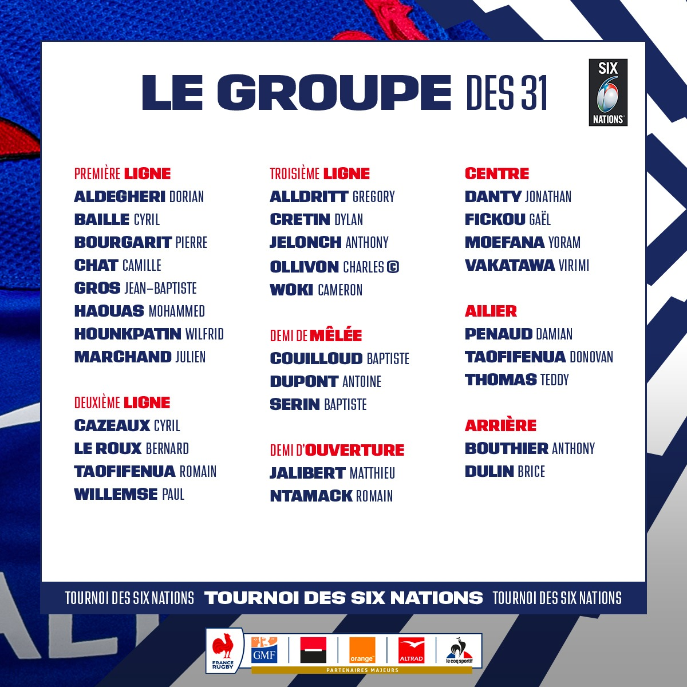

XV DE FRANCE- La FFR a communiqué ce dimanche la liste des 31 joueurs qui
prépareront le prochain déplacement à Twickenham (Angleterre-France samedi 13 mars, à 17h45).
Deux
retours notables :
Romain Ntamack et Virimi Vakatawa, qui avaient raté le début du Tournoi en raison de blessures. Chez les
absents, on notera Arthur Vincent et Louis Carbonel.

L'encadrement du XV de France a donc fait connaître, ce dimanche, la liste des 31 joueurs retenus pour préparer la rencontre en Angleterre, samedi prochain, pour entretenir le rêve d'une victoire dans ce Tournoi des 6 nations 2021. Une liste qui comporte quelques modifications par rapport à celle initiale pour l'Ecosse, avant que le match en soit reporté.
Les retours attendus de Ntamack et Vakatawa, Arthur Vincent toujours symptomatiques
Blessés en janvier, respectivement à la mâchoire et au genou, Romain Ntamack et Virimi Vakatawa avaient raté le premier mois de compétition. Tous les deux de retour sur les terrains de Top 14 ce samedi, ils figurent immédiatement dans le groupe France qui se réunira, ce dimanche au CNR de Marcoussis. Preuve de la confiance que leur accorde le staff. Deux joueurs, par effet mécanique, font les frais de ces retours : au centre, la « victime » était toute trouvée avec le Montpelliérain Arthur Vincent, toujours déclaré symptomatique dix jours après son test positif à la Covid-19. A l'ouverture, c'est le Toulonnais Louis Carbonel, pourtant excellent samedi face au Racing 92, qui disparaît du groupe.
Uini Atonio et Arthur Vincent toujours
« covidés »
Comme Arthur Vincent, un autre joueur n'apparaît pas dans le groupe en raison des ses tests sanguins. Il s'agit du pilier rochelais Uini Atonio, qui ne figurait d'ailleurs pas sur la feuille de match de son club, ce samedi à Castres. Pour le remplacer, c'est Wilfrid Hounkpatin qui a été appelé. Le pilier Castrais avait déjà été appelé par Fabien Galthié et ses adjoints en janvier 2020. Avant de déclarer forfait sur blessure.
Couilloud plutôt que Bézy
Fabien Galthié reste fidèle à ses logiques de hiérarchie. Depuis le départ, au poste de demi de mêlée où la France est particulièrement fournie, il procède dans cet ordre : Dupont, Serin, Couilloud, Bézy, Lucu. Ces dernières semaines, le forfait de Dupont (Covid-19) et le retour de blessure de Couilloud avaient fait de la place aux trois autres. Désormais que tout le monde est apte est de retour, le sélectionneur a retenu les trois premiers de la liste. Selon toute vraisemblance, Dupont devrait débuter à Twickenham. Serin part avec une tête d'avance pour figurer sur le banc.
Camille Chat retrouve son rang
Parmi les réapparitions du week-end, il y avait donc Virimi Vaktawa, Romain Ntamack mais aussi Camille Chat. Titulaire à Mayol avec le Racing 92, déjà explosif, il ne lui aura fallu qu'un seul match pour convaincre le sélectionneur et son staff de le rappeler en Bleu. Au talonnage, Chat accompagnera Julien Marchand (Toulouse) et Pierre Bourgarit (La Rochelle).